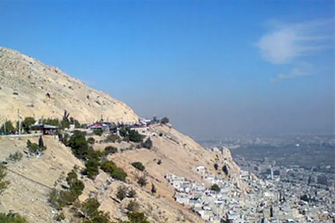
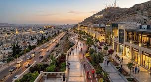

The Umayyad Mosque – Islam's Third Holiest Site
The Great Mosque of Damascus, known as the Umayyad Mosque, was built between 705 and 715 AD by Caliph Al-Walid I of the Umayyad dynasty. It stands on a site that has been sacred for over 3,000 years — first a temple to Hadad-Ramman, then a Roman temple to Jupiter, then a Byzantine cathedral dedicated to John the Baptist.
The mosque's construction was one of the greatest architectural projects of the early Islamic world. Al-Walid reportedly spent seven years' worth of Syria's tax revenue on the project, employing craftsmen from Persia, India, Greece, and Morocco. The result is a building whose golden mosaics, soaring minarets, and vast colonnaded courtyard have inspired Islamic architecture for 1,300 years.
The mosque is still an active place of worship today. Its most sacred spot is the Shrine of John the Baptist (Yahya ibn Zakariyya) — revered by both Muslims and Christians. A second shrine, the Tomb of Saladin, stands in a small garden adjacent to the northern wall.



